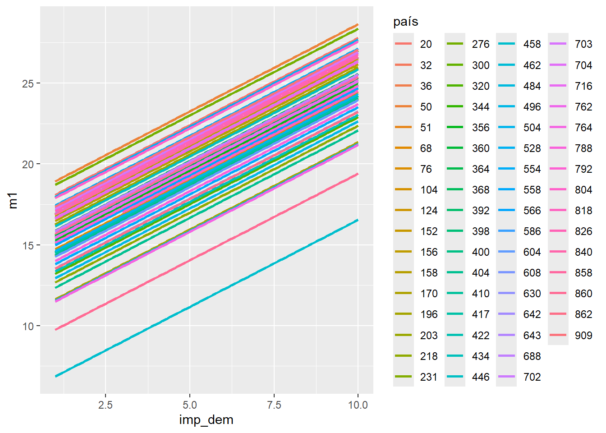

| var | label | n | NA.prc | mean | sd | range | |
|---|---|---|---|---|---|---|---|
| 3 | indice_dem | indice_dem | 88207 | 0 | 23.36 | 6.34 | 30 (0-30) |
| 5 | país | ISO 3166-1 numeric country code | 88207 | 0 | 443.67 | 255.20 | 889 (20-909) |
| 1 | grp_econ | Scale of incomes | 88207 | 0 | 4.95 | 2.08 | 9 (1-10) |
| 2 | imp_dem | Importance of democracy | 88207 | 0 | 8.38 | 2.11 | 9 (1-10) |
| 4 | mujer | mujer | 88207 | 0 | 0.52 | 0.50 | 1 (0-1) |
Adhesión a principios democráticos liberales: entre las percepciones individuales y los contextos nacionales
Estadística multinivel 2025
Abstract
En la presente investigación, se estudia cómo inciden las percepciones individuales y los ambientes democráticos nacionales en el apoyo ciudadano a los principios fundamentales de la democracia liberal a nivel mundial. Se utilizaron los datos de World Values Survey (Ola 7) para crear un modelo multinivel; a partir de esto, se realizó un índice de percepción sobre principios de la democracia liberal, compuesto por percepciones respecto a los derechos civiles, las elecciones libres y la igualdad género. Preliminarmente, los resultados indican una varianza significativa entre países (ICC =0,148); en este sentido, la valoración individual a la democracia y la atmosfera democrática nacional muestran efectos positivos en el respaldo democrático, pero tanto el nivel económico cómo el género presentan resultados mixtos.
Introducción
La democracia como forma de organización política se ha visto en tensión a lo largo del mundo durante la última década, ya sea por factores económicos, políticos o por la baja constante en el compromiso democrático por parte de los líderes políticos (Wike, Silver, & Castillo, 2019). No obstante, más allá de la evaluación de los sistemas políticos en general, es fundamental investigar de manera empírica la adhesión y percepción de los ciudadanos en cuanto a la democracia de tipo liberal a nivel global. Tanto la democracia como el liberalismo son conceptos que se consideran y plantean generalmente como interrelacionados, no obstante, su relación debe ser analizada más a fondo. Según Córdoba Gómez (2008) y Bellino (2017), existe una tensión y contradicción entre estos dos conceptos, ya que, por un lado, el liberalismo enfatiza la libertad individual, y por otro, la democracia apuesta por el bien común. Otro punto a considerar, al hablar de democracia, son los procesos que han excluido históricamente a las mujeres. Si se considera lo anterior, entonces la comprensión tanto de la democracia como de la ciudadanía política, y la igualdad de género en los derechos civiles, estaría siendo más amplia, ya que estas demandas de género dan cuenta de dimensiones estructurales de ideales democráticos liberales (Serret, 2004). La democracia liberal se entenderá como un tipo régimen político donde la igualdad política entre ciudadanos es un eje normativo crucial. Los ejes principales de este tipo de democracia son; el Estado de Derecho, la rendición de cuentas de los gobernantes, la competencia política, y la existencia de un Estado con capacidad de gobierno (Offe, 2011; Ariely & Davidov, 2011). Un ejemplo de medición de estos valores y características es el Liberal democracy index (LDI), basado en estimaciones de promedios regionales publicadas en The Varieties of Democracy (V-Dem Institute, 2025). Este Índice considera como dimensiones significativas la independencia judicial y los “derechos individuales de las minorías contra la tiranía estatal y mayoritaria” (Our World in Data, 2024). Lo anterior da cuenta de que el análisis de los niveles de la democracia liberal, a nivel global, a partir de una concepción y dimensiones mucho más normativas, ya se ha realizado anteriormente (LDI). Por lo mismo, investigaciones como las de Kong (2024) y el Pew Research Center (2019) abrirían nuevas posibilidades en cuanto se agreguen variables que consideren percepciones subjetivas y/o determinantes individuales en cada contexto local respecto a la soberanía popular en elecciones libres y legítimas, la protección de derechos civiles frente al mismo Estado, y la igualdad de género en derechos civiles. La democracia liberal estaría pasando por un proceso de erosión debido a la baja participación ciudadano y el aumento de los casos de corrupción. Si es que la democracia liberal no aboga por el bienestar político, se estarían dejando de lado algunos grupos y minorías, lo que afectaría de manera directa a la protección de los derechos civiles (Bellino, 2017). Actualmente existe un quiebre entre el marco normativo de una democracia liberal y la percepción de esta por parte de sus ciudadanos, por lo que la percepción de los ciudadanos no necesariamente se condice con el sistema político de su país, el cual podría estar evaluado como uno de tipo consolidado o estable (Kong, 2024). A su vez, la consideración de otras variables, como la desigualdad económica, indicarían que no necesariamente se reduce el apoyo a los principios democráticos, pero sí puede llegar a aumentar la validación de figuras autoritarias (Kyung Lee, 2024). Por lo mismo, es necesario plantear las diferencias entre un apoyo de tipo “normativo” a la democracia liberal, y las percepciones y actitudes frente al funcionamiento de esta misma en los climas democráticos a lo largo del globo.
Pregunta de investigación
¿Cómo inciden las percepciones individuales y los climas democráticos nacionales en el respaldo ciudadano a los principios de la democracia liberal?
Objetivos e hipótesis
El objetivo principal es analizar cómo inciden las percepciones individuales y los ambientes democráticos nacionales en el apoyo ciudadano a los principios fundamentales de la democracia liberal a nivel mundial, empleando el enfoque de modelamiento multinivel.
Los objetivos específicos de la presente investigación serán:
La construcción y verificación de un índice de percepción sobre principios de la democracia liberal; considerando las percepciones respecto a derechos civiles, elecciones libres e igualdad de género. Evaluar de qué forma variables individuales (nivel 1), como nivel económico, género y valoración de la democracia, inciden en el respaldo a los principios democráticos. Estimar el impacto que tienen variables contextuales agregadas (nivel 2), cómo percepción nacional de la democracia y la valoración de esta sobre el respaldo individual a los principios democráticos liberales.
Las hipótesis que se abordaran en la presente investigación son:
Relación intraclase:
H0: No existe varianza significativa entre países respecto al respaldo a la democracia liberal (ICC ≈ 0 ).
H1: Existe una varianza significativa entre países respecto al respaldo a la democracia liberal(ICC > 0 ).
Nivel 1(individual):
H1a: Las mujeres presentan un mayor respaldo a los principios de la democracia liberal que los hombres, es decir, que presentarán un mayor puntaje en el índice.
H1b: Las personas que aprecian positivamente vivir en democracia presentarán un mayor puntaje en el índice.
H1c: Las personas en situación económica más acomodada presentarán un mayor puntaje en el índice.
Nivel 2 (contextual):
H1a: Los países en donde las personas perciban que viven en un régimen democrático (Q251 promediada) presentaran un mayor puntaje en el índice.
H2b: Los países en donde las personas valoren positivamente en democracia q (Q250 promediada) presentarán un mayor puntaje en el índice.
Datos, variables y métodos
Utilizando la base de datos de la World Values Survey, Wave 7 (2017–2022), se construyó un Índice de Percepción sobre Principios de Democracia Liberal, que va del 0 al 30, donde el 0 indicaría que una baja percepción y, por lo tanto, bajo apoyo a la democracia liberal, y el 30 por su lado, un mayor apoyo a esta misma. En este Índice se abordarán las percepciones hacia los principios y el clima democrático a lo largo de 66 países de la WVS, Wave 7, donde posterior al tratamiento de casos perdidos, la muestra final sería de N = 88.207. Este índice está compuesto por tres dimensiones: 1) Soberanía popular (Q243), 2) Protección de derechos civiles frente al Estado (Q246), y 3) Igualdad de género en derechos civiles (Q249).
Justificación modelamiento multinivel
Dado que la presente investigación busca analizar cómo las percepciones individuales y los climas democráticos nacionales influyen en el respaldo a principios y actitudes hacia la democracia liberal, se opta por utilizar un modelo estadístico de tipo multinivel. Esta estrategia metodológica resulta adecuada debido a la estructura jerárquica de los datos del World Values Survey, donde las respuestas individuales están anidadas dentro de países, configurando así una estructura de dos niveles. Este tipo de organización no puede ser ignorado sin consecuencias analíticas: omitir la agrupación puede llevar a una subestimación de los errores estándar, inflar la tasa de falsos positivos y dejar de captar la varianza contextual entre países (Goldstein, 1995; Finch et al., 2014). El modelo multinivel permite estimar efectos individuales (nivel 1) y contextuales (nivel 2) de manera simultánea, incorporando interceptos aleatorios por país. Además, la correlación intraclase (ICC = 0.1489) indica que aproximadamente un 15% de la varianza en el apoyo a la democracia liberal se explica por diferencias entre países, lo que justifica empíricamente el uso de este enfoque. Esta metodología no solo permite capturar la influencia de factores individuales (como sexo, nivel socioeconómico o valoración subjetiva de la democracia), sino también del contexto institucional, político o económico de cada país. Por ello, el modelo multinivel es particularmente adecuado para el análisis propuesto y ha sido validado en estudios comparativos recientes sobre percepciones democráticas (Ariely & Davidov, 2011; Kong, 2024).
Variables
Se busca realizar un análisis empírico a través de un modelo estadístico multinivel, donde se explora cómo varía el índice mencionado anteriormente en función de variables independientes de nivel 1 (factores individuales): 1) Género (Q260), recodificada como dummy para mujer (1 = mujer), 2) autopercepción de grupo económico (Q288), y la importancia atribuida a vivir en democracia (Q250).
Por otro lado, las variables independientes contextuales (nivel 2) son las siguientes: 1) Percepción de cuán democrático es un país (Q251 promedio por país) y 2) Importancia de vivir en un país democrático (Q250 promedio por país). Finalmente, la variable tipo cluster es utilizada es país (B_COUNTRY) que tiene de posibles valores 66 países a nivel mundial dentro de la base de datos de la WVS, Wave 7.
Estadísticos descriptivos
Tabla 1, Estadísticos descriptivos univariados nivel 1
Tabla 2, Estadisticos descriptivos univariados nivel 2
| var | label | n | NA.prc | mean | sd | range |
|---|---|---|---|---|---|---|
| cuan_dem | cuan_dem | 66 | 0 | 6.08 | 1.05 | 4.25 (3.73-7.98) |
| prom_imp_dem | prom_imp_dem | 66 | 0 | 8.39 | 0.60 | 2.61 (6.94-9.55) |
Los valores medios de las variables incluidas muestran un alto respaldo general a la democracia liberal (media del índice ≈ 25), con varianzas relevantes entre países y grupos sociodemográficos. Se observa también una alta valoración subjetiva de la democracia (Q250), con medias sobre 8 en la mayoría de los países.
Modelos preliminares
Los modelos construidos son los siguientes:
Anotaciones generales de ecuaciones
Yij: Apoyo a la democracia liberal (índice de Q243 + Q246 + Q249) del individuo i en el país j.
β₀: Intercepto general.
u₀ⱼ: Intercepto aleatorio del país j.
εij: Error aleatorio individual.
- Modelo nulo:
Yij= β₀ + u₀ⱼ + εij
- Modelo de nivel 1: incluye predictores individuales.
Yij = β₀ + β₁(grp_econij) + β₂(mujerij) + β₃(imp_demij) + u₀ⱼ + εij
grp_econij: Autoevaluación de grupo económico.
mujerij: Dummy de género (1 = mujer).
imp_demij: Valoración individual de la importancia de vivir en democracia.
- Modelo de nivel 2: incluye predictores contextuales.
Yij = β₀ + β₄(cuan_demj) + β₅(prom_imp_demj) + u₀ⱼ + εij
cuan_demj: Promedio nacional de evaluación sobre cuán democrático es su país.
prom_imp_demj: Promedio nacional de importancia de vivir en democracia.
- Modelo multinivel: combina ambos niveles, mostrando que los factores contextuales y personales inciden conjuntamente en el apoyo a la democracia.
Yij = β₀ + β₁(grp_econij) + β₂(mujerij) + β₃(imp_demij)
+ β₄(cuan_demj) + β₅(prom_imp_demj) + u₀ⱼ + εij
- Modelo con pendiente aleatoria: Modelo multinivel con efectos aleatorios en las pendientes de la variable “Importancia atribuida a vivir en democracia”.
Yij = β₀ + β₁(grp_econij) + β₂(mujerij) + β₃(imp_demij)
+ β₄(cuan_demj) + β₅(prom_imp_demj) + u₀ⱼ + u1j⋅imp_demij + εij
Análisis y resultados preliminares
Tabla 3, Modelos preliminares
| Nulo | Individual | Agregado | Multinivel | Efectos aleatorios | |||||||||||
|---|---|---|---|---|---|---|---|---|---|---|---|---|---|---|---|
| Predictors | Estimates | std. Error | p | Estimates | std. Error | p | Estimates | std. Error | p | Estimates | std. Error | p | Estimates | std. Error | p |
| (Intercept) | 23.32 | 0.30 | <0.001 | 2.54 | 0.29 | <0.001 | -3.41 | 4.93 | 0.492 | 3.72 | 3.58 | 0.299 | 4.07 | 3.32 | 0.221 |
| Scale of incomes | 0.03 | 0.01 | <0.001 | 0.59 | 0.48 | 0.228 | -0.01 | 0.01 | 0.385 | -0.02 | 0.01 | 0.027 | |||
| mujer | -0.06 | 0.04 | 0.100 | 8.68 | 5.52 | 0.121 | -0.13 | 0.04 | <0.001 | -0.11 | 0.04 | 0.002 | |||
| imp_dem | 1.08 | 0.01 | <0.001 | 2.22 | 0.44 | <0.001 | 1.08 | 0.01 | <0.001 | 1.08 | 0.06 | <0.001 | |||
| cuan_dem | 0.33 | 0.02 | <0.001 | 0.12 | 0.26 | 0.643 | 0.22 | 0.25 | 0.379 | -0.04 | 0.24 | 0.857 | |||
| prom_imp_dem | 1.15 | 0.04 | <0.001 | 1.11 | 0.44 | 0.012 | 1.26 | 0.41 | 0.002 | ||||||
| Random Effects | |||||||||||||||
| σ2 | 34.40 | 29.58 | 28.73 | ||||||||||||
| τ00 | 6.02 país | 4.19 país | 11.98 país | ||||||||||||
| τ11 | 0.20 país.imp_dem | ||||||||||||||
| ρ01 | -0.84 país | ||||||||||||||
| ICC | 0.15 | 0.12 | 0.15 | ||||||||||||
| N | 66 país | 66 país | 66 país | ||||||||||||
| Observations | 88207 | 88207 | 66 | 88207 | 88207 | ||||||||||
| Marginal R2 / Conditional R2 | 0.000 / 0.149 | 0.169 / 0.169 | 0.370 / 0.328 | 0.163 / 0.267 | 0.163 / 0.291 | ||||||||||
Gráfico de interceptos aleatorios

Para llevar a cabo el análisis, con un enfoque multinivel respecto al respaldo ciudadano a los principios de democracia liberal, en el cual se estimó un modelo nulo - sin predictores- , incluyendo solamente los interceptos a nivel país. Esto nos permitió identificar un ICC de 0.1489864, el cual queda redondeado en un 15%, asegurando una varianza significativa. Esto indica que el 15% de la varianza total del índice de percepción sobre principios de la democracia liberal se le puede atribuir al contexto de cada país.
El modelo nulo hizo posible la interpretación de los efectos aleatorios, es decir, la varianza del intercepto entre países. Se identifica una varianza de intercepto considerable respecto a la varianza residual, lo que comprueba que las diferencias contextuales entre países no son al azar, incidiendo en el respaldo de las personas hacia los valores democráticos liberales; esto reafirma la hipótesis de que el contexto trasciende la influencia de las características individuales. Respecto el modelo con pendientes aleatorias, según se observa en la tabla, hay una variabilidad real de la pendiente de la dependiente entre países, además de que la covarianza entre intercepto y pendiente indica una relación negativa, lo que significa que a mayor intercepto, se obtiene menor pendiente. Por otro lado, se observa que la ICC había disminuido a un 12% en el modelo multinivel, sin embargo volvió a 15% en el modelo con pendiente aleatoria.
A continuación, se estimó un modelo con variables de nivel 1 (individuales), utilizando las variables de “importancia atribuida a vivir en democracia” (Q250), “autopercepción de grupo económico” (Q288) y “género” (Q260). El modelo mostró que la variable de “importancia atribuida a vivir en democracia” presenta un efecto significativamente positivo, demostrando que quienes valoran más la democracia, tienen a expresar un mayor respaldo a los principios democráticos liberales (coef. ≈ 0.72). Por el contrario, las variables de “género” (ser mujer) y “autopercepción de grupo económico” no presentan efectos significativos, contradiciendo la teoría observada.
Respecto al modelo de nivel contextual, se llevó a cabo incorporando dos variables; “percepción de cuán democrático es un país” y la “importancia de vivir en un país democrático”; ambas a través de un promedio por país. El modelo mostró qué la variable de “importancia de vivir en un país democrático” tiene un efecto significativamente positivo, indicando que los países en los cuales la ciudadanía valora la democracia refuerza las creencias respecto a los principios de la democracia liberal. La variable de “percepción de cuán democrático es un país” no presenta efectos significativos; indicando qué la percepción de democracia de un país no significa una mayor adhesión respecto a los principios de la democracia liberal. Los resultados preliminares respaldan que la democracia liberal no se explica netamente por características individuales, destacando la importancia de la internalización de los principios democráticos liberales en sus respectivos contextos nacionales; validando la hipótesis de que las atmosferas democráticas refuerzan las actitudes y percepciones ad hoc a los principios democráticas liberales.
Conclusión
Preliminarmente, los hallazgos indican una varianza significativa entre países (ICC=15% redondeada) y se pueden identificar efectos positivos respecto a la atmosfera democrática y la valoración individual a la democracia respecto a los principios liberales democráticos. Pero variables como género y nivel educativo no muestran significancia. Respecto al informe final se considera que el modelo multinivel completo tendrá mayor ajuste teórico, ya que considera todos los niveles por lo que se obtendrá un buen cálculo de la relevancia individual de la democracia y cómo esta se relaciona con el promedio nacional; permitiendo predictores más significativos.
Referencias bibliográficas
Ariely, G., & Davidov, E. (2011). Can we rate public support for democracy in a comparable way? Social Indicators Research, 104(2), 271–286. https://doi.org/10.1007/s11205-010-9693-5 Bellino, M. J. (2017). Democracia liberal y democracia participativa: una tensión no resuelta. Revista LyE, (25), 1–20. http://revistas.derecho.uba.ar/index.php/revistalye/article/view/1037 Córdoba Gómez, M. (2008). Democracia liberal y democracia participativa: una tensión no resuelta. Andamios, 5(10), 9–32. https://www.scielo.org.mx/scielo.php?script=sci_arttext&pid=S1870-0063200800030000 Finch, W. H., Bolin, J. E., & Kelley, K. (2014). Multilevel modeling using R. CRC Press. https://doi.org/10.1201/b16042 Goldstein, H. (1995). Multilevel statistical models (2nd ed.). Edward Arnold. Kong, M. (2024). Individual Perspectives on Liberal Democracy: Insights from World Values Survey. International Journal of High School Research, 6(4), 45–60. https://doi.org/10.36838/v6i4.5 Lee, S. K. (2024). Inequality and the Eroding Base of Liberal Democracy. Social Science Research, 113, 103087. https://doi.org/10.1016/j.ssresearch.2024.103087 Offe, C. (2011). Crisis and innovation of liberal democracy: Can deliberation be institutionalised? Czech Sociological Review, 47(3), 447–472. Our World in Data. (2024). Liberal Democracy Index – V-Dem Central Estimate, Population-Weighted. OurWorldInData.org. https://ourworldindata.org/grapher/liberal-democracy-index Serret, E. (2004). Género y democracia. Revista Venezolana de Estudios de la Mujer, 9(21), 35–47. https://www.redalyc.org/pdf/315/31502103.pdf Wike, R., Silver, L., & Castillo, A. (2019). Many across the globe are dissatisfied with how democracy is working. Pew Research Center. https://www.pewresearch.org/global/2019/04/29/many-across-the-globe-are-dissatisfied-with-how-democracy-is-working/